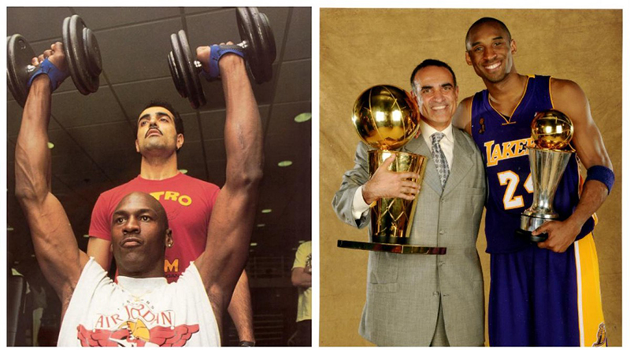
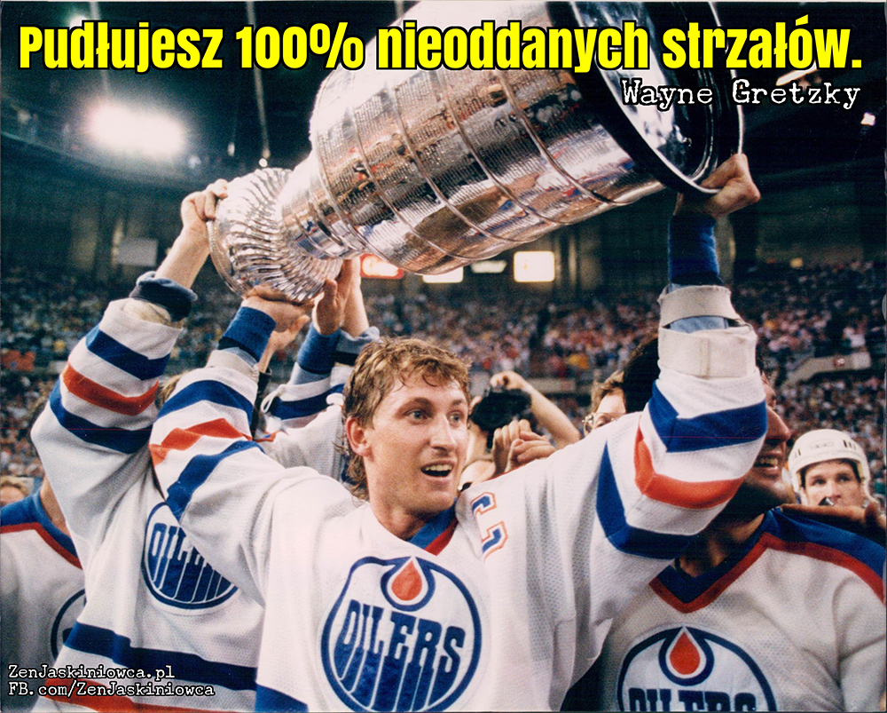

Tim Grover - Kobe Bryant powiedział o nim, że jest absolutnym mistrzem mentalnej twardości, który pomaga osiągnąć zawodnikom wyniki o których nawet nie marzyli. Dwyane Wade ufał mu bezwarunkowo i słuchał jak wyroczni. Michael Jordan, jego najbardziej znany klient, przez pewien czas płacił mu dodatkowo za to by nie pracował z nikim innym w NBA. Pierwotnie Jordan zdecydował się jedynie na 30 dni współpracy. Ostatecznie pracowali ze sobą 15 lat. Zajmował się jego ciałem oraz jego umysłem. Z brutalną i bezwzględną obowiązkowością, o której zaraz się dowiesz. „Jeśli zobaczę cię w mojej okolicy, odstrzelę cię” – powiedział mu Jordan po zakończeniu sportowej kariery. Tim Grover, bo o nim właśnie mowa, jest legendą wśród zawodowych sportowców, którzy w rekordowym czasie muszą stanąć na nogi – dosłownie i w przenośni – wychodząc z beznadziejnych kontuzji i mentalnego bagna. Jego książka – "Nieustępliwy" jest od 5 lat kultową pozycją w kręgach sportu i biznesu. „Tim Grover wie o mentalnym aspekcie sportu więcej niż ktokolwiek inny. Ta książka pozwoli ci odkryć do czego jesteś zdolny, osiągnąć wyniki o których nawet nie marzyłeś i sięgnąć po najwyższe poziomy sukcesu. A potem wspiąć się jeszcze wyżej.” – napisał na okładce sam Kobe Bryant.
Zobaczmy zatem jak wyglądają niepoprawnie politycznie lekcje wchodzenia na szczyt – i utrzymywania się tam całymi latami.

"PRZESTAŃ MYŚLEĆ! Już teraz wiesz co masz zrobić i jak to zrobić. Więc co cię zatrzymuje?"
"Wszystko co niezbędne do wielkości masz już w sobie. Większość ludzi rezygnuje, bo inni wmówili im ograniczenia a pozostanie w strefie komfortu jest i łatwiejsze i bezpieczniejsze. Zatem w jaki sposób stajesz się NIE-DO-ZATRZYMANIA? Poprzez usunięcie wszelkich narzuconych sobie ograniczeń. Chcę, żebyś chciał WIĘCEJ i osiągał WSZYSTKO czego pragniesz.”
"Bycie NIEUSTĘPLIWYM oznacza WYMAGANIE OD SIEBIE WIĘCEJ niż ktokolwiek kiedykolwiek mógłby od ciebie wymagać, zdając sobie sprawę z tego, że gdy za każdym razem się zatrzymujesz, wciąż masz niewykorzystany margines sił i możliwości. MUSISZ ROBIĆ WIĘCEJ. Z chwilą gdy twój umysł mówi „Koniec” twój instynkt krzyczy „NASTĘPNY!” Nie ma w tym nic skomplikowanego. To CZYSTY ZWIERZĘCY INSTYNKT.”
"Bycie NIEUSTĘPLIWYM polega na WIECZNEJ NIE-SATYSFAKCJI, ciągłym pędzie do bycia najlepszym a potem jeszcze lepszym. Polega na wrzucaniu kolejnego biegu, który zabierze cię na wyższy poziom, nawet jeśli poziom ten jeszcze nie istnieje. Polega na skonfrontowaniu się z własnymi lękami i pozbyciu się toksyn, które gwarantują porażkę. Polega na budzeniu trwogi i respektu wynikających z twardości i mentalnej siły a nie jedynie fizycznych możliwości.”
"Wszyscy urodziliśmy się 'złymi’. Urodzony 'złym’ a przyuczony do 'dobra’. Albo – jeśli wolisz: urodzony NIEUSTĘPLIWYM i przyuczony do ustępowania. Dzieci są naturalnie absolutnie i bezwzględnie nieustępliwe. A potem rodzice naczytają się książek o wzorcach grzeczności i wszystko psują. Odbieramy im te wszystkie potężne, naturalne instynkty, te błyskawiczne impulsy z flaków, nazywamy to 'złym zachowaniem’ i robimy co w naszej mocy by je wyrugować. Co za strata. Cała ta naturalna energia, napęd, intuicja, działanie – wszystko sprowadzone do stania za karę w kącie.”
A ciebie jak wychowano?
"Czy jesteś w ogóle w stanie przypomnieć sobie czasy, w których nie byłeś przyuczany ograniczeń i podporządkowywania się, naśladowania tego co robią inni, ostrożnego badania możliwości, zamartwiania o to, co inni powiedzą? W pewnym momencie przestałeś robić to co było ci naturalnym a zacząłeś to, co ci kazano. Zebrałeś te wszystkie swoje 'niepoprawne’ popędy, pomysły i pragnienia i upchnąłeś je głęboko tam, gdzie nikt nie może ich dojrzeć (…) Ale teraz wiesz i czujesz, że one wciąż tam są. Są tam w tym miejscu, którego nie ukazujesz innym, w tej części, która odmówiła bycia wyuczoną, która odrzuciła podporządkowanie się i grzeczne wychowanie. Są tam, po mrocznej stronie twojego instynktu i bez nich nie uda ci się osiągnąć WIELKOŚCI.”
„Jeśli naprawdę chcesz być ELITĄ, jeśli naprawdę chcesz być NIEUSTĘPLIWYM, musisz NAUCZYĆ SIĘ odrzucić wszystko to czego cię nauczono, pozbyć się wszystkich tych restrykcji i ograniczeń, całego tego negatywizmu oraz wątpliwości. A jeśli zadanie to wprawia cię w konfuzję, pozwól, że nieco to uproszczę: Masz przestać myśleć. Tyle w tym temacie.”
"Bo dokładnie w ten sposób chcę, żebyś postrzegał instynkt. Jako NIE-MYŚLENIE. Po prostu czysta, surowa reakcja z flaków, wynikająca z tego, że jesteś tak gotowy, tak przygotowany, tak pewny, że nie ma się nad czym zastanawiać. Żadnego dumania, żadnego wahania. Natychmiastowa odpowiedź poparta doświadczeniem i przygotowaniem. Gdy myślisz – umierasz. Gdy po prostu WIESZ – działasz.”
"Czy możesz być najlepszy? Ależ oczywiście, że MOŻESZ! Więc dlaczego wciąż to kwestionujesz? Krótka piłka: ponieważ, w pewnym momencie, skomplikowałeś to co proste i przestałeś sobie ufać.”
"Reaktywność zamiast aktywności. Nadmiar myślenia. Nadmiar analizowania. To właśnie w ten sposób zatracasz swoją NATURALNĄ UMIEJĘTNOŚĆ stawia się WIELKIM. Kiedy nadmiernie skupiasz się na tym co dzieje się wkoło, tracisz kontakt z tym co dzieje się w środku. Myślisz o wszystkim tym co może się nie udać, o wszystkim tym co mogą zrobić inni. Zamiast WIEDZIEĆ że DASZ RADĘ, zajmujesz się myśleniem.”
"Do pomieszczenia wchodzi z pewnością a wychodzi z założonym wynikiem. (…) I wie to z góry.”
"Większość pracy wykonuje po cichu poza sceną, samotnie, bez szpanu i przyciągania uwagi. WYMIATACZE nie robią rzeczy na pokaz. Nie robią też rzeczy od niechcenia. Prawdziwy WYMIATACZ nigdy nie powie ci ani co zrobi ani co planuje. Dowiesz się kiedy będzie już po wszystkim. On w tym czasie będzie zajmował się już kolejnym wyzwaniem.”
"A oto najważniejsze co musisz wiedzieć o WYMIATACZU, element, który go definiuje i odróżnia od całej reszty: jest całkowicie uzależniony od podniecającego smaku sukcesu. Jego pragnienie jest tak ogromne, jego głód tak intensywny, że podporządkował dla niego całe swoje życie. I żadna ilość zwycięstw nie jest wystarczająca. Gdy tylko ten smak poczuje, gdy tylko się w nim rozsmakuje, gdy tylko na chwilę go przytrzyma – chwilowa satysfakcja mija i głód się nasila.”
"Wszystko co robi robi by zaspokoić ten nałóg. I wcale nie chodzi o to, że musi lubić sam proces. On po prostu kocha wynik końcowy. WYMIATACZE doskonale rozumieją, że nie muszą kochać tego co robią by odnieść w tym sukces; muszą jedynie być NIEUSTĘPLIWYMI w dążeniu do niego. Cała reszta jedynie dekoncentruje ich w zdobywaniu nagrody. Wynik jest jedynym co ma znaczenie.”
"Bycie WYMIATACZEM w każdym aspekcie życia nie jest ani możliwe ani zalecane, z tego prostego powodu, że osiągnięcie doskonałości w jednej dziedzinie wymaga powiedzenia 'I mam gdzieś całą resztę."
"Ludzie ci nie przestają pracować tak fizycznie jak i mentalnie bo zwolnienie tempa zmusiłoby ich do zastanawiania się nad tym ile musieli poświęcić i co musieli wycierpieć w drodze na szczyt. Większość śmiertelników obawia się tych szczytów, bo upadek z nich może zabić. Jednak WYMIATACZE są gotowi ryzykować taką śmierć. Nie obchodzi ich ani zderzenie się z podłogą ani zderzenie się z sufitem. Bo nie ma żadnej podłogi. I nie ma też żadnych sufitów.”

W przypadku Tim'a temat tego kim jest wymiatacz i jak można nim zostać jest bardzo obszerny i bez żartów - uratuje ci życie. Dlatego jeśli chcesz zgłebić wiedzę w tym temacie to zachęcam cię do kupna książki "Nieustępliwy". Z książki tej dowiesz się:
jak stać się WYMIATACZEM i czym różni się on od pozostałych ludzi
dlaczego w każdym z nas istnieje iskra WYMIATACZA i jak ją rozbudzić
jak odnaleźć swój stan pełnego skupienia
dlaczego czasem nie warto myśleć, a wręcz NIE WOLNO CI TEGO ROBIĆ
co różni ludzi osiągających sukcesy, od tych, którzy utrzymują się na szczycie
jak podnieść się po upadku, gdy cały świat wali się na Ciebie
Pewnie jej nie kupisz, jak większość innych ludzi... jednak nie bez przyczyny klasa wyższa stanowi tylko 16% społeczeństwa.